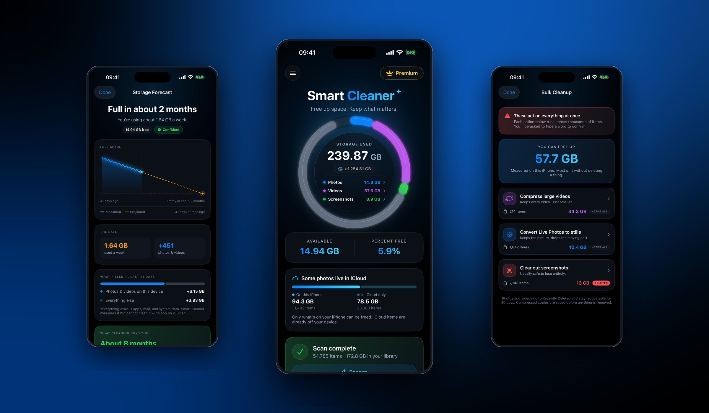

Measure, never guess
Every figure is one the app took itself and can act on. It reports what it scanned, separates iCloud-only items from on-device ones, and caps reclaimable space at storage the device is physically using.
ON-DEVICE IPHONE STORAGE CLEANER
Smart Cleaner shows you exactly what is filling your iPhone, then gets the space back by compressing your media rather than deleting it. Every figure it prints is one it measured and can act on.

Every figure is one the app took itself and can act on. It reports what it scanned, separates iCloud-only items from on-device ones, and caps reclaimable space at storage the device is physically using.
Videos are re-encoded to HEVC on the iPhone's own hardware encoder and Live Photos convert to stills, so the memory survives at a fraction of the size. Deletion is offered, never the default.
One capacity reading a day becomes a trend line, so the app can say what freeing space actually buys you in months of runway — not just a byte figure you scroll past.
PRIVACY BY CONSTRUCTION
WHAT IT WILL NEVER CLAIM
iOS gives no third-party app access to system caches, junk files, memory, or battery behaviour. Smart Cleaner does not pretend otherwise. It names the part of your storage that no app can clean rather than quietly attributing all of it to photos.